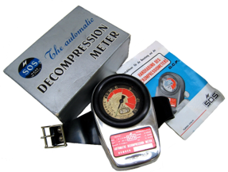
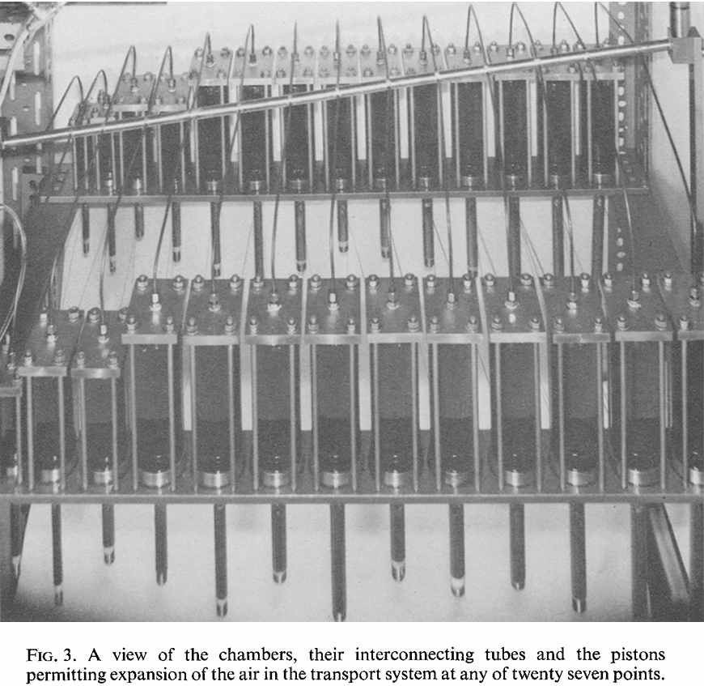
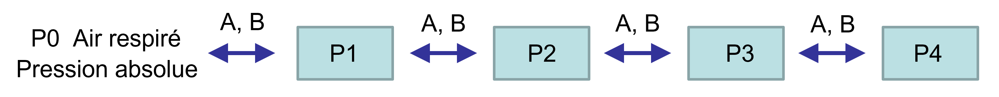
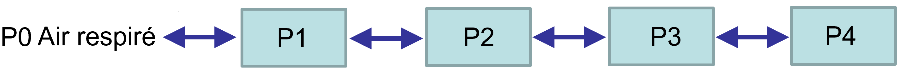
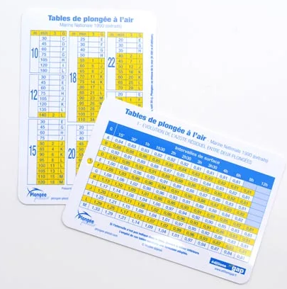
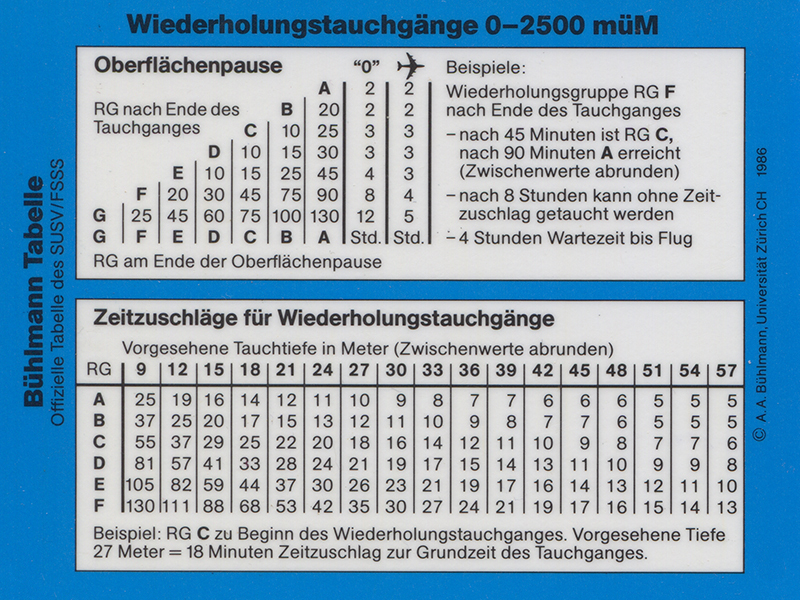
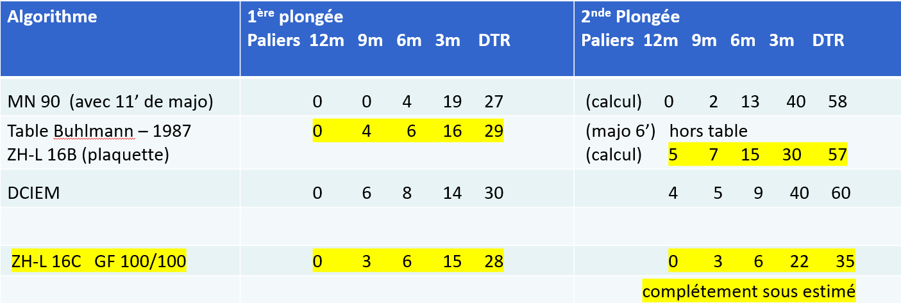
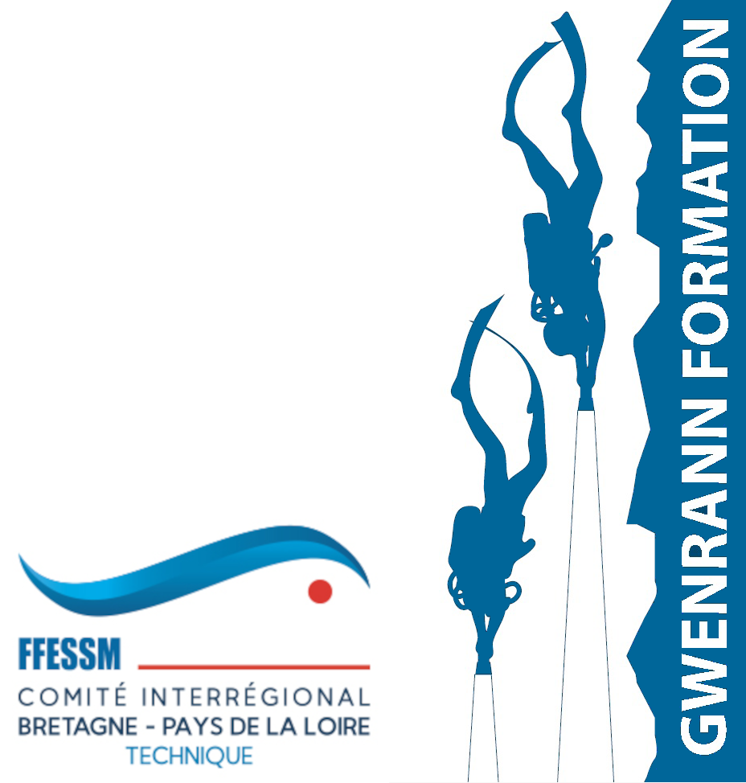

(versions KS-1971 et DCIEM 1983)
Pascal Monestiez
Avril 2026
Version détaillée et approfondie
Reveal.initialize({ plugins: [ RevealZoom ] });


Pascal Monestiez, Avril 2026, CC BY NC
L’équation est reprise par Kidd et Stubbs (1969) pour une première version du modèle (appelée KS-1971 par la suite), dont le code est publié en 1973 par Nishi et Kuehn
Le projet est de concevoir un ordinateur numérique de plongée,
ce qui implique des algorithmes simplifiés, peu de paramètres et un pas
de temps d’une minute (principe de parcimonie du fait de la puissance
des calculateurs de l’époque).
Hills B.A (1967) A pneumatic analogue for predicting the occurrence of decompression sickness. J. of Medical and biological Engeneering, 5, 421-432
Kidd D.J. and Stubbs R.A. (1969) The use of the pneumatic analog computer for divers, in P.B. Bennett and D.H. Elliott, Eds., The Physiology and Medicine of Diving and Compressed Air Work, 1st ed., pp. 386-413, Bailliere, Tindall and Cassell, London. 1969.
Weaver R.S., Kuehn L.A. and Stubbs R.A. (1968) Decompression calculations: analogue and digital methods. DRET Report 703,
Defence Research Establishment, Toronto.
Pascal Monestiez, Avril 2026, CC BY NC
Le but était d’être aussi conservatif que les tables de l’époque (Royal Navy, US Navy). Le KS-1971 semble trop conservatif pour les plongées courtes peu engagées et pour les plongées très longues et engagées
Le KS-1971 est modifié en conséquence par Nishi et Lauckner (1984) et produit le DCIEM 1983 model. Il donnera les tables DCIEM Diving Manual (1992).
Nishi R. Y. and Lauckner G.R. (1984) Development of the DCIEM 1983 decompression model for compressed air diving.
DCIEM No. 84-R-44, Defence and Civil Institute of Environmental Medicine, Downsview, Ontario, pp. 54.
Lauckner G.R., Nishi R.Y. and Eatock B.C. (1984) Evaluation of the DCIEM 1983 decompression model for compressed air diving.
DCIEM No. 84-R-72, Defence and Civil Institute of Environmental Medicine, Downsview, Ontario, pp. 30.
Pascal Monestiez, Avril 2026, CC BY NC

dP1/dt = A ( ( B + P0 + P1) ( P0 - P1 ) - ( B + P1 + P2 ) ( P1 - P2 ) )
dP2/dt = A ( ( B + P1 + P2 ) ( P1 - P2) - ( B + P2 + P3 ) ( P2 - P3 ) )
dP3/dt = A ( ( B + P2 + P3 ) ( P2 - P3 ) - ( B + P3 + P4 ) ( P3 – P4) )
dP4/dt = A ( B + P3 + P4 ) ( P3 – P4 )
Pascal Monestiez, Avril 2026, CC BY NC
Dans la première version Kidd et Stubbs 1971 :
une seule formule donnant les limites avec 1 seul coefficient pour les 4 compartiments
SAD = Pi / R - Patm
coefficient R= 1.8 qui correspond au coeff. C = 2 de Haldane (donc un peu plus conservatif)
Dans la version DCIEM 1983 :
une formule du
type Droite de M-values pour les compartiments 1 et 2 seulement (soit
deux coefficients chacun, l’équivalent des a et b de Bühlmann)
SAD = Pi / R - Offset - Patm
avec R = 1,3 et Offset = 4,8 pour le premier compartiment
et R = 1,385 et Offset = 2.5 pour le second compartiment
Le SAD est directement la profondeur de palier en mètres (msw)
Les vitesses de descente ET de remontée sont de18m/mn
(devenues 15m/mn dans la version la plus récente)
Pascal Monestiez, Avril 2026, CC BY NC
Les pressions sont mesurées en msw (mètres d’eau de mer)
La pression hydrostatique correspond donc à la profondeur
La pression absolue est la profondeur + 10,06 msw (Patm ou Psl)
La gestion des gaz dissous dans les compartiments
Les tensions modélisées ne sont PAS exprimées en pression partielle
du gaz neutre (N2) mais en pression absolue du compartiment
(cela évite d’avoir à multiplier ou diviser par 0.8 pour gérer les TN2)
Déconcertant mais efficace
Pascal Monestiez, Avril 2026, CC BY NC

(Pas Haldanien)Pascal Monestiez, Avril 2026, CC BY NC
Animations avec charges et décharges ainsi que les flux
Pascal Monestiez, Avril 2026, CC BY NC
Flux de P1 vers P2 = A ( B + P1 + P2) ( P1 – P2 )
Equation non-linéaire et symétrique par rapport a P1 et P2 dans sa forme
(P1 – P2) est le gradient, et si B devient très grand (A petit), on retrouve l’équation de Haldane
Nishi R. Y. et Kuehn L.A. (1973) Digital computation of decompression profile. In DCIEM Report n° 884 23pp. (incluant le code FORTRAN en appendix)
^*^ les ordis actuels avec un pas fin de quelques secondes (généralement non communiqué par le constructeur) utilisent probablement un Runge-Kutta d’ordre 1 plus simple
Pascal Monestiez, Avril 2026, CC BY NC
Flux de P1 vers P2 = A ( B + P1 + P2) ( P1 – P2 )
Parler de période n’a pas vraiment de sens car la solution n’est pas l’exponentielle
Une approximation donne pour Pi (initiale) et Pf (finale)
T1/2 = ln ( 2 – (Pf – Pi) / (B + Pi + Pf )) / (A (B + 2 Pf ))
La pseudo-période T1/2 dépend de Pi et Pf
T1/2 est plus court si Pf > Pi (en charge) et plus long si Pi > Pf (décharge)
Simulation de charge et décharge et calcul des pseudo-périodes
Pascal Monestiez, Avril 2026, CC BY NC
Flux de P1 vers P2 = A ( B + P1 + P2) ( P1 – P2 )
Hennessy (1973) montre qu’il s’agit de l’approximation d’un modèle de diffusion qui suit la seconde loi de Fick (équation de la diffusion) . Ce modèle de diffusion est celui utilisé par Hills (1967) pour modéliser les décompressimètres analogiques à membrane.
L’équation de diffusion approximée au travers d’un schéma aux différences finies redonne l’équation de Kidd et Stubbs 1971 (ci-dessus) pour une certaine forme du coefficient D de diffusion, où D est fonction linéaire de la pression.
Hennessy T. R. (1973) The equivalent bulk-diffusion model of the pneumatic decompression computer. J. of Medical and biological Engeneering, 11, 135-137
Hennessy T. R. (1974) The interaction of perfusion and diffusion in homogeneous tissue. Bulletin of Mathematical Biology,
36, 505-526
Pascal Monestiez, Avril 2026, CC BY NC
Le DCIEM n’utilise pas de procédure type « majoration » calculée sur les compartiments lents (MN90 T=120mn, Tables Buhlmann 1987 T=77mn)
Il calcule vraiment les successives à partir de son modèle : les compartiments P3 et P4 continuent à se charger bien après le retour en surface et sont encore chargés au début de la seconde plongée
Exemple de simulation de plongées successives avec le DCIEM
Les tables DCIEM (DCIEM Diving Manual, 1992) peuvent induire en erreur avec des « groupes de successives ». Ils ne sont pas utilisés pour le calcul de majorations, mais juste pour fournir une procédure de décompression sous forme de tables !
Pascal Monestiez, Avril 2026, CC BY NC
les ordinateurs néo-haldaniens(modèles ZHL-16C, RGBM)
L’ordinateur ne sait pas à quelle profondeur on va plonger. Et ne peut pas calculer de majoration. Plusieurs possibilités:
calcul simple de charge/décharge pour chaque compartiment durant l’intervalle et la seconde plongée
ajout d’un conservatisme sur la seconde plongée, mais généralement non documenté par le fabricant ( GF ? autres ?)
Comparaison avec le DCIEM sur un exemple assez engagé:
48m 20mn (Q = 215) – Intervalle 2h00 – 48m 20mn (Q = 215)
Pascal Monestiez, Avril 2026, CC BY NC


Pascal Monestiez, Avril 2026, CC BY NC

La comparaison avec l’algorithme Bühlmann ZHL 16C montre une bonne cohérence sur la première plongée, mais le conservatisme de la procédure de majoration a disparu sur la seconde plongée
Pascal Monestiez, Avril 2026, CC BY NC
Pour obtenir un conservatisme équivalent aux tables ou au DCIEM, il faut appliquer
des GF 70-80, ce qui devient très pénalisant sur la première plongée
Pascal Monestiez, Avril 2026, CC BY NC
Le DCIEM donne des procédures de décompression similaires à celles des tables avec majorations (mais fait le calcul ce qui permet d’autres profils que les plongées carrées)
Le DCIEM a été validé expérimentalement pour des successives multiples et variées. Il représente donc une solution très fiable
Pour les autres ordinateurs, il faut donc leur faire confiance (certains font quelque chose de plus que le calcul brut pour chaque compartiment)
OU utiliser les GF pour durcir le modèle ZHL 16C en cas de successives multiples et répétées (deux à trois plongées par jour type croisière)
Simplicité : Le DCIEM a seulement 6 parametres (3 pour le KS-1971). En comparaison, le ZHL-16C a presque 50 paramètres : [T,a,b]x16 + GF
Efficacité : Le DCIEM couvre un large spectre de situations dont les successives multiples. Il apparait comme plutôt sûr car légèrement plus conservatif que la majorité des autres modèles et a une fiabilité semblable aux tables (comportement non documenté face aux yoyos)
Pascal Monestiez, Avril 2026, CC BY NC
Remerciements à Jean-Pierre Montseny et Alain Foret pour toutes les informations et documents qu’ils m’ont transmis
Merci aux documentalistes de Nantes Université pour avoir réussi à retrouver la trace d’articles scientifiques de plus de 50ans publiés dans des comptes-rendus de congrès
Les simulations du modèle et la résolution des équations différentielles ont été codées sous le logiciel R. Les graphiques et animations ont été réalisées avec les packages ggplot2 et ggplotly, la présentation avec les environnements Quarto, Markdown et Revealjs
Cette présentation est accessible sous https://pmonestiez.github.io/dciem/
Pascal Monestiez, Avril 2026, CC BY NC
Hills B.A (1967) A pneumatic analogue for predicting the occurrence of decompression sickness. J. of Medical and biological Engeneering, 5, 421-432
Kidd, D.J. and Stubbs R.A. (1969) The use of the pneumatic analog computer for divers, in P.B. Bennett and D.H. Elliott, Eds., The Physiology and Medicine of Diving and Compressed Air Work, 1st ed., pp. 386-413, Bailliere, Tindall and Cassell, London.
Kidd, D.J., Stubbs R.A. and Weaver R.S. (1971) Comparative approaches to prophylactic decompression. In Underwater Physiology, Proceedings of the Fourth Symposium on Underwater Physiology, Ed. C.J. Lambertsen, pp. 167-177
Nishi R. Y. et Kuehn L.A. (1973) Digital computation of decompression profile. In DCIEM Report n° 884, Defence and Civil Institute of Environmental Medicine, Downsview, Ontario, pp. 23pp. (including FORTRAN code in appendix)
Hennessy T. R. (1973) The equivalent bulk-diffusion model of the pneumatic decompression computer. J. of Medical and biological Engeneering, 11, 135-137
Hennessy T. R. (1974) The interaction of perfusion and diffusion in homogeneous tissue. Bulletin of Mathematical Biology, 36, 505-526
Hennessy T. R. and Hempleman H. V. (1977) An Examination of the Critical Released Gas Volume Concept in Decompression Sickness, Proc. R. Soc. Lond. B, 197, 299-313. doi: 10.1098/rspb.1977.0072
Nishi R.Y. and Lauckner G.R. (1984) Development of the DCIEM 1983 decompression model for compressed air diving. DCIEM No. 84-R-44, Defence and Civil Institute of Environmental Medicine, Downsview, Ontario, pp. 54.
Lauckner G.R., Nishi R.Y. and Eatock B.C. (1984) Evaluation of the DCIEM 1983 decompression model for compressed air diving. DCIEM No. 84-R-72, Defence and Civil Institute of Environmental Medicine, Downsview, Ontario, pp. 30.
DCIEM Diving Manual (1992) Air décompression procedures and tables. DCIEM No. 86-R-35, Ed. The Department of National Defence (Canada), Defence and Civil institute of Environmental Medicine (DCIEM), and Universal Dive Techtronics, Inc. (UDT), pp. 347
Pascal Monestiez, Avril 2026, CC BY NC

{kind=link}
{kind=link}
{kind=link}
{kind=link}
{kind=link}